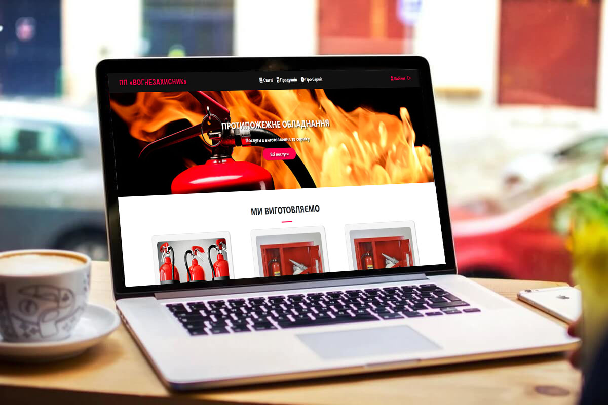

Тема
ІНФОРМАЦІЙНЕ ТА ПРОГРАМНЕ ЗАБЕЗПЕЧЕННЯ СИСТЕМИ ЕЛЕКТРОННОЇ КОМЕРЦІЇ В СФЕРІ ПОЖЕЖНОГО ОБЛАДНАННЯ
Короткий опис
Цей лендінг презентує результати бакалаврського дослідження, присвяченого сучасним підходам у веб-розробці.
Ключові слова
- РОЗРОБКА САЙТУ
- ВЕРСТКА САЙТУ
- ПРОГРАМУВАННЯ
- PHP
- COMPOSER
- AUTOLOAD
- ІНТЕРНЕТ-МАГАЗИН
- БАЗА ДАНИХ
- MYSQL
- HTML
- CSS
- BOOTSTRAP
Актуальність теми
Cтворення сайту в Інтернеті забезпечує нові можливості щодо розширення, інформаційної підтримки або рекламі бізнесу. Професійно створений сайт забезпечує легкість його знаходження по запитам в пошукових системах, оскільки цільову аудиторію складають користувачі, які шукають конкретну інформацію в Інтернеті. Крім того, витрати на рекламу в Інтернеті значно нижче, ніж в традиційних засобах.
Мета дослідження
Розробка інформаційного та програмного забезпечення електронної комерції в сфері пожежного обладнання.
Основні завдання
- Розробити багатосторінкову інформаційну систему.
- Додати функціонал замовлення товарів, перегляд статей, відслідковування статусу замовлення, додавання відгуків про сервіс.
- Забезпечити доступність та адаптивність ресурсу.
- Оптимізувати завантаження та кросбраузерність.
Методологія
Проектування баз даних, проектування веб-сайтів, модель інформаційної системи замовлення та їх обробки.
Очікувані результати
Розроблено багатосторінкова інформаційна система для замовлення товарів протипожежного обладнання з графічним інтерфейсом та оснащений навігаційним меню для зручності користувача. Основна увага приділена пошуку та замовленню товару протипожежного обладнання. Програмна реалізація виконана за допомогою серверної мови PHP з частковим використанням MVC моделі, зберіганням даних у базі MYSQL та фреймворком Bootstrap для швидкого створення лендінгу сторінки.
Ілюстрації
Контактна інформація
Студент: Андрій ГОМЕНЮКEmail: andreyhomenuk@gmail.com
Телефон: +38 (099) 123-45-67